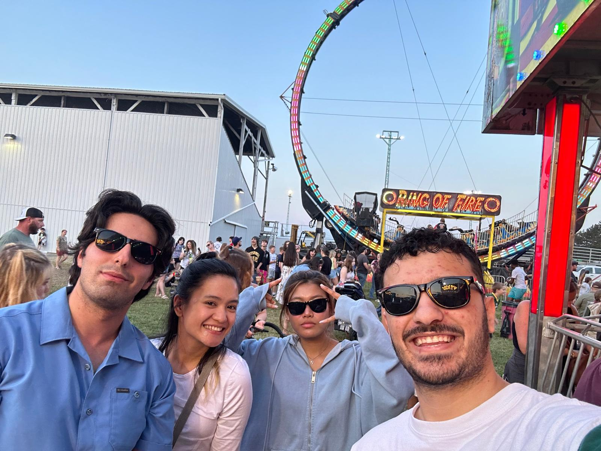
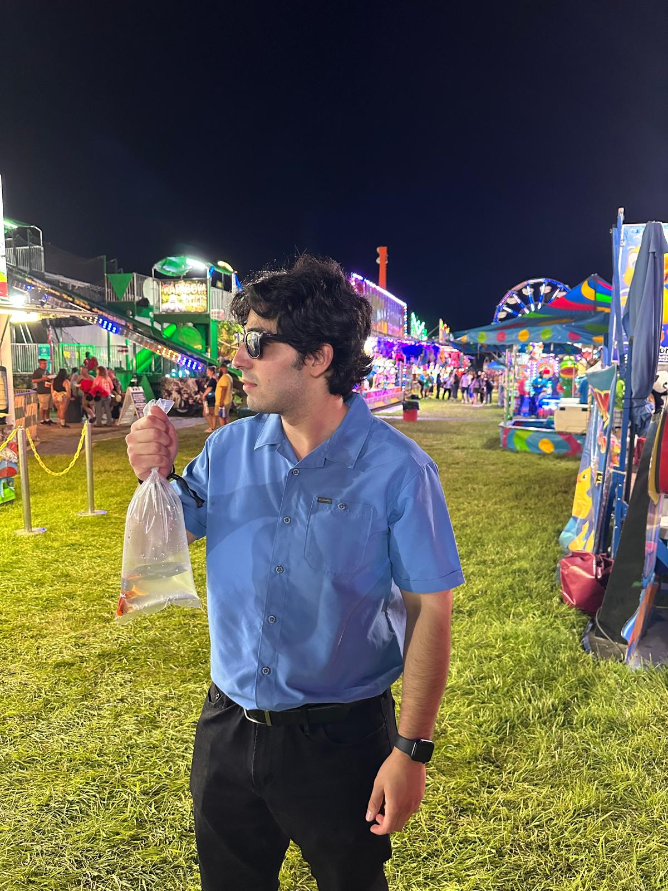
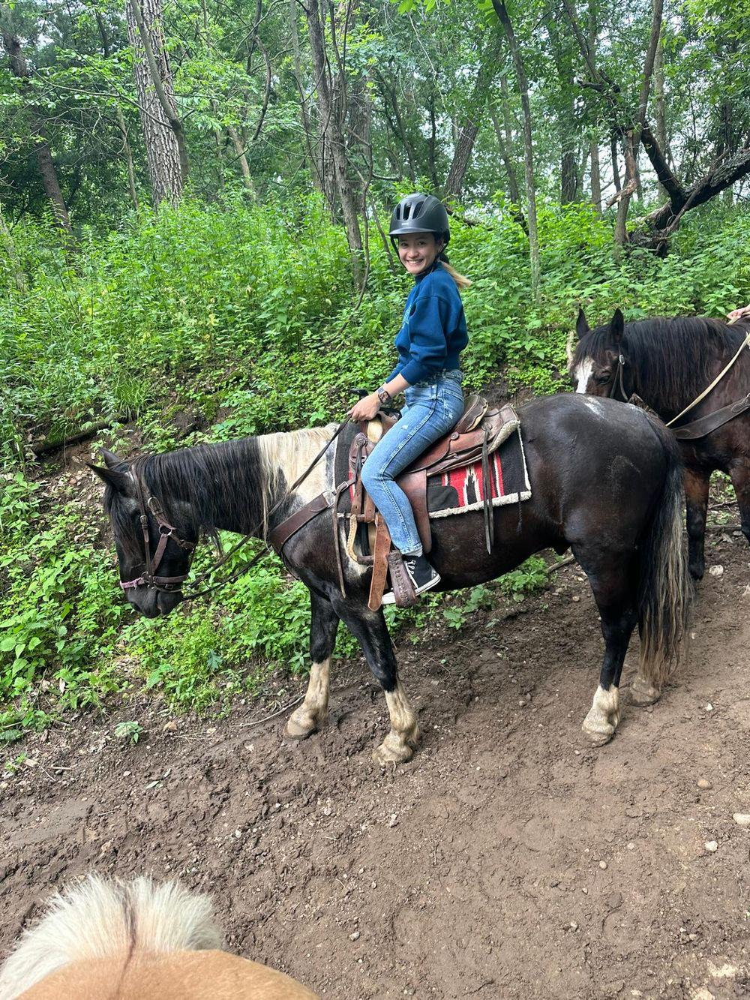
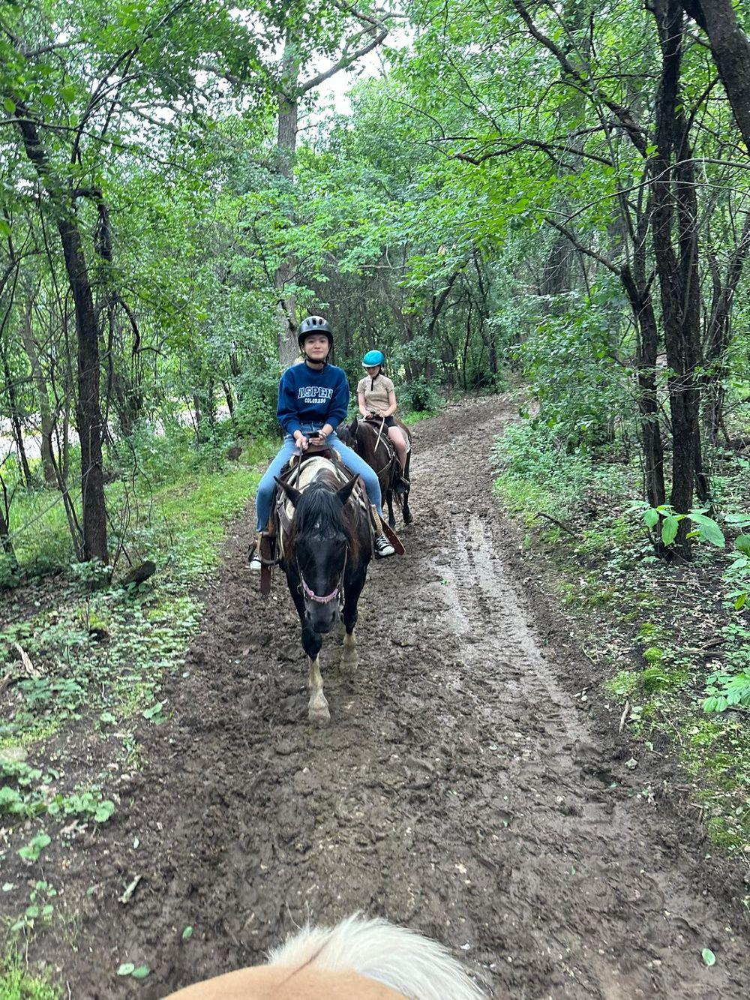

From Trails to Carnival Games
Horseback Riding in Wisconsin Dells
We left early in the morning for Wisconsin Dells to go horseback riding. While this was my first time riding a horse in the U.S., I had done it many times in Turkey, even riding donkeys. But for my girlfriend, this was a first-time experience.
The Forest Trail
When our turn came, we were assigned our horses and the journey began. The trail they chose was beautiful, and we had a great time riding through the forest. One small letdown was that they promised to take our pictures during the ride, but later told us their camera was broken.
Thankfully, I managed to take a few photos of my girlfriend on the trail, so we still had something to remember it by. After the ride, we heard about a local fair happening in Baraboo and decided to go.
The Baraboo Fair
The fair was super fun and full of energy. There were animals everywhere—cute little donkeys, llamas, and more. After enjoying the petting zoo, we moved on to the carnival section. We rode the gondola, played games, and even won a fish we named "Watermelon."
It turned out to be one of the most fun and spontaneous days we’ve had.